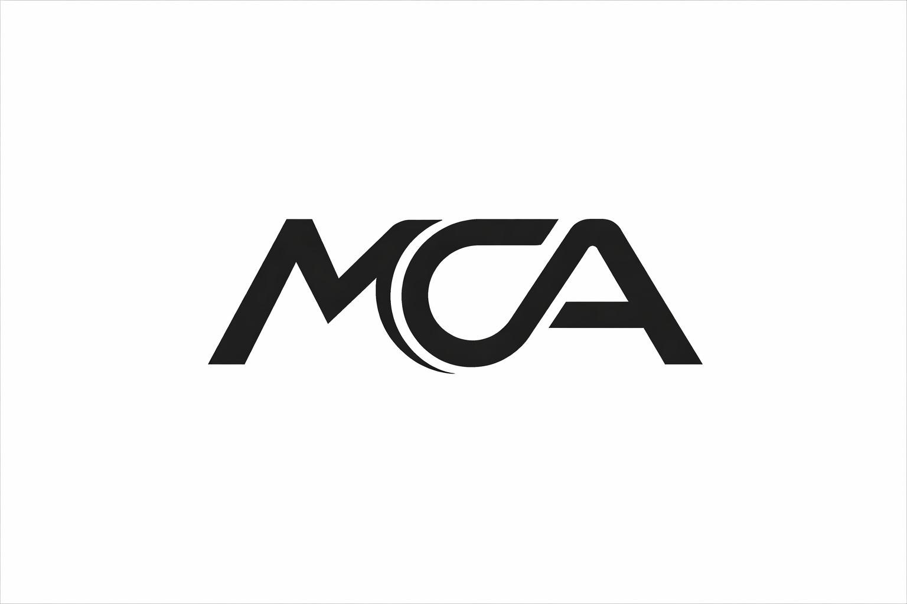
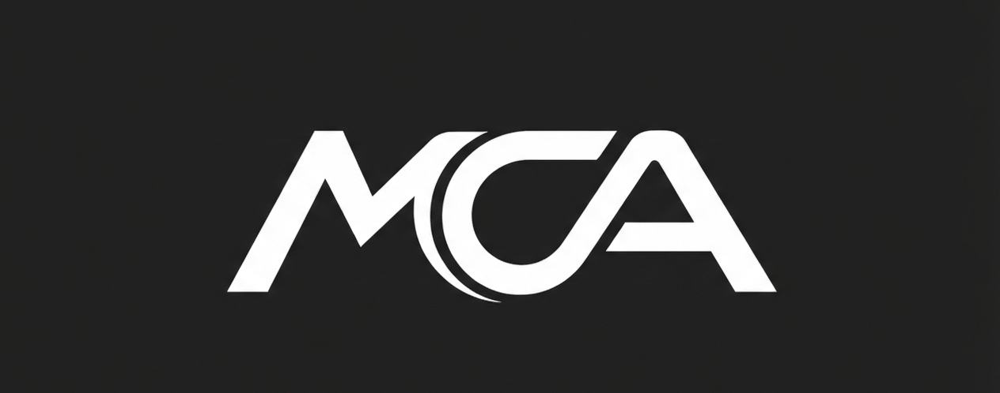

 
Mario Cano
ES / EN
Mario Cano Antolin
Ingeniero de Software
Especializado en ingeniería del software, inteligencia artificial y sistemas basados en datos.
Educación
Grado en Ingeniería Informática
Universidad de Alicante
Sep 2022 - Ene 2027 (Previsto)
Especialización en Ingeniería del Software
Erasmus+ Ingeniería Informática
Budapest University of Technology and Economics (BME)
Sep 2024 - Ene 2025
Asignaturas destacadas:
Artificial Intelligence
Data-Driven Systems
Aptitudes Tecnológicas
Lenguajes & Backend
Java
C++
C#
Python
.NET
PHP
Web & Frontend
JavaScript
HTML5 / CSS3
Ionic Framework
Datos & Bases de Datos
MySQL / MariaDB
Oracle / PLSQL
MongoDB
SQLite
Metodologías & Herramientas
Git / GitHub
Docker
Linux / Bash
UML / Patrones de Diseño
Agile / Scrum